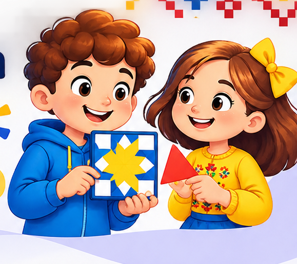

Ромб
Повторіть ромб через однакову відстань.
Математика стає мистецтвом!
Досліджуйте фігури, симетрію та повороти. Створіть свій орнамент і перевірте математичне правило.

Проблема: як створити красивий орнамент із простих фігур за математичним правилом?
Спробуйте придумати правило, перевірити його на цифровій моделі та створити власну картину. Працюйте з комп'ютера або телефона.
Оберіть фігуру й колір. Натискайте на клітинки, щоб малювати. Повторне натискання повертає фігуру.
Алгоритмічні дії
Полотно готове.
Порада: намалюйте в лівій половині декілька фігур, а тоді застосуйте віддзеркалення.
Кут показує, наскільки ми повернули фігуру. Повне коло — це 360°, половина кола — 180°, чверть кола — 90°. Наприклад, стрілка годинника за чверть оберту повертається на 90°.
Підказка: тут показано поворот за годинниковою стрілкою від стрілки вгору.
Симетрія — це коли частини малюнка відповідають одна одній. Якщо скласти малюнок по осі симетрії, його половинки можуть збігтися, наче відображення в дзеркалі.
Змінюйте параметри та спостерігайте за результатом. Це математична модель: однакове правило дає передбачуваний візерунок.
Дослід: встановіть 4 повтори й 0°, потім 4 повтори й 90°. Що змінилося? А що залишилося незмінним?
Мініперевірка: скільки градусів має повний оберт?
360°. Два півоберти по 180° утворюють повне коло.
Намалюйте фігури лише ліворуч на полотні з першого завдання. Натисніть «Віддзеркалити ліву половину». Порівняйте обидві частини: чи стали вони дзеркальними?
Українські орнаменти часто використовують ромби, хрестики, трикутники та повторення. Розгляньте три навчальні приклади, натхненні геометричними мотивами української вишивки. Це не копії орнаментів конкретного регіону.
Повторіть ромб через однакову відстань.
Знайдіть вертикальну вісь симетрії.
Порівняйте фігури: що повторюється?
Потрібно: аркуш у клітинку або звичайний папір, олівець, лінійка, кольорові олівці чи фломастери. Ножиці, клей і нагрівальні прилади не потрібні.
Ваш STEAM-продукт: справжня авторська листівка, створена руками за математичним правилом. Покажіть її вдома або сфотографуйте для своєї виставки.
Зробіть два варіанти маленького орнаменту: з повторенням без дзеркальної симетрії та з дзеркальною симетрією. Який виглядає гармонійніше саме для Вашої листівки? Поясніть вибір.
За бажанням можна замінити листівку на паперову закладку: намалюйте вузький прямокутник і прикрасьте його власним повторюваним візерунком.
Яке правило найкраще допомогло створити гармонійний візерунок? Чи підтвердилася гіпотеза?
Усі малюнки створюються у Вашому браузері. Нічого не надсилається на сервер.
STEAM — це коли ми разом використовуємо науку, технології, інженерію, мистецтво й математику, щоб досліджувати, придумувати та створювати нове. Сьогодні всі п’ять допомогли нам зробити мозаїку!
Пригадайте, що Ви робили на уроці. Перетягніть кожну картку до відповідної літери. На телефоні можна натиснути на картку, а потім на літеру. Для кожної літери — одна дія.
Знайдіть усі 5 пар!
Помилилися? Спробуйте іншу літеру — це частина дослідження.